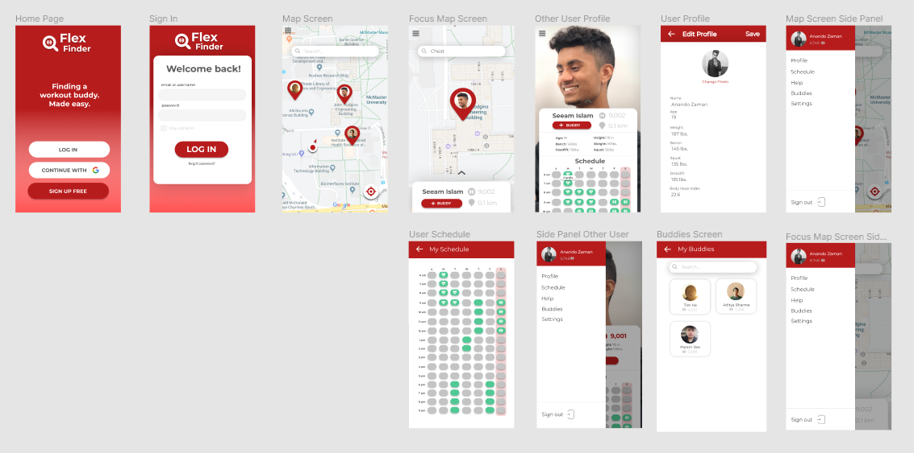

flexfinder
FlexFinder is an mobile app designed to encourage users to exercise, through location-based matchmaking and gamification. The app uses the users location to help to find "gym buddies" through which they will be motivated to work out together.
The desired outcome is to improve and increase frequency, thoroughness, and enjoyability of the exercise. FlexFinder was created within 24 hours at DeltaHacks V.
Team
Anando Zaman (Developer)
Seeam Islam (Developer)
Tim He (Designer)
Motivation
For many university students, it's hard to find time for exercise in their busy schedules, and even harder to find friends to exercise with. Because of this, a general sense of apathy is the only barrier
between students and good health. In a recent study, 72% of students surveyed said they would work out if they had someone else to work out with.
If we reduce the friction in the process of finding a workout buddy with a schedule that matches yours, and motivating factors are added into the mix, that barrier can easily be broken.
Design
The problem space focused on adolescents, however, we decided to hone in on our target audience and design for students aged 16-24, specifically. We began by analyzing apps popular among individuals of that age group, in an attempt to make our own solution more appealing and familiar.
Some of these apps included Uber, Tinder and
LettuceMeet. These three apps became a huge inspiration for us, as we realized that all three of them, in addition to being familiar experienced, also provide incentive for exercise, as presented below. These aspects/features are listed in order of user task flow.
1. The "Uber"-like aspect notifies and presents users with possibilities within the area, both in terms of gyms that are available, and people that would like to work out.
2. The "Tinder"-like aspect encourages users to pair up with like-minded/like-bodied individuals in order to maximize their comfortableness in the gym. This results in higher accountability in terms of working out, and begins to overcome the mental barrier previously mentioned.
3. The "LettuceMeet"-like aspect simplifies meet-up times, with scheduling availabilities clearly laid out right from the get go.
These three features work together in a familiar way to the user, and all three provide motivating factors, beyond just "wanting to be fit". After we came up with these features, I began to draw out the designs with pen and paper, then jumped into Figma to create some high-fidelity mockups.
Here are some of those final mock-ups I created:

Technology
Our main platform for this project was on Android, so I got the opportunity to work with the developers on handing off the designs, and implementing them in the XML. I also got the chance to play around with Google Maps API, and further understand the workflows involved in mobile apps.
next